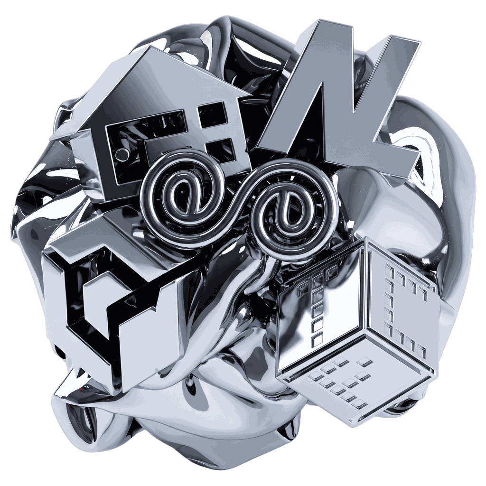

EC
A club that grows and stays connected through knowledge sharing and collaboration
Websiteendless-creation.netlify.appGoogle sign-in is blocked in in-app browsers. Please open this page in Chrome or Safari to apply or use the team board.
Open in external browserA union hackathon hosted together by five academic clubs of
Seoul National University of Science and Technology (SeoulTech): EC · NL · Darakbang · Plum · TCP.

The first hackathon hosted jointly by five academic clubs with different tech stacks and personalities.
Any student in the Department of Computer Science and Engineering can apply, regardless of club membership (students on leave are excluded). We accept up to 120 participants, and we run pre-event training sessions so that people with little development experience can join too.
2–6 members per team. You can form a team and apply together, or apply alone and the organizers will match you automatically. Mixing members from different clubs is totally fine.
The Hackathon track builds a new service from a given topic, while the Implementation track implements a given assignment step by step.
The topic is not yet revealed. Track-specific topics will be announced at Session 1 (Nov 4).
A club that grows and stays connected through knowledge sharing and collaboration
Websiteendless-creation.netlify.appA club that goes beyond networking to explore systems, AI, and software in general
GitHubgithub.com/NL-sA club that learns, has fun, and grows together through diverse academic and social activities
Instagram@darackbang_comPLUM, the one and only game development club at SeoulTech
NotionPlum intro pageA gathering of developers with crazy performance: Team Crazy Performance
Websiteteamcrazyperformance.comThe first recruitment round runs from Oct 7 (Wed) to Oct 16 (Fri).
You can apply on this site as an individual or as a team.
The application form is scheduled to open on Oct 7 (Wed) at 08:00.
Team announcement, event rules and full schedule overview, an AI mini seminar, and training on Git · GitHub · collaboration tools. Each team shares its detailed topic, roles, and repository link.
Guest talks by working professionals and alumni, plus team-by-team mentoring. Each talk includes a 10-minute Q&A, and teams that are ready can give a mid-point demo and get feedback.
It will be held in Room 109, Mirae Building, and wraps up on the last day with presentations, judging, awards, and a prize raffle.
The judging panel is made up of professors and industry professionals, and a participant vote is factored in as well.
Hackathon — Service completeness, creativity in using AI
Implementation — Feature implementation, code understanding, extra features
KRW 3,000,000
The prize raffle will be held in the early hours of Nov 14 (Day 2).
If you have any other questions, ask your club organizers or email us at the contact address below.
Yes. Any student in the Department of Computer Science and Engineering can apply regardless of club membership (students on leave of absence excluded). On the application form, choose “No club” in the club field.
Yes. If you apply without a team, the organizers will match you automatically based on your preferred role and tech stack. You can also find a team yourself on the Team board.
Please use the Team board.
Detailed topics for each track will be revealed at Session 1 on Nov 4. Until then, only the track categories are announced.
Please mark the dates you cannot attend on the application form in advance. We will take them into account for team assignment and scheduling.
No. Existing capstone design projects, or projects that are essentially the same, cannot be submitted. Capstone design projects are exhibited and awarded separately, and this rule prevents winning twice with the same work. Entries judged to be duplicates may be disqualified.
The participation fee is KRW 20,000 per person and may be reduced once the number of participants is confirmed.
(The bank account for payment will be announced later.)
First recruitment round Oct 7 – Oct 16 · Applications open Oct 7 at 08:00 (tentative)
Sign in with Google and submit directly on this page. If you have a team, the team leader should write “Team leader: your name”.
If you applied without a team, please use the Team board.
To promote your own team, post in the “Recruiting teams” tab of the Team board.
The final teams will be announced at Session 1 on Nov 4.
Nov 13 (Fri) – 14 (Sat), Room 109, Mirae Building.
Existing capstone design projects, or projects that are essentially the same, cannot be submitted. Capstone design projects are exhibited and awarded separately, and this rule prevents winning twice with the same work. Entries judged to be duplicates may be disqualified. (Terms of Use, Articles 8 and 12)
The name, student ID, and contact details on the application form are used only to run the event and are deleted within 3 months after the event ends (winners’ information is kept for up to 1 year). Only the organizers can see application information. For details, see the Privacy Policy.
If you cannot find a team, you will be matched automatically, so please keep that in mind.
It is okay if you cannot find a team. After recruitment closes on Oct 16, the organizers will automatically match the remaining participants.